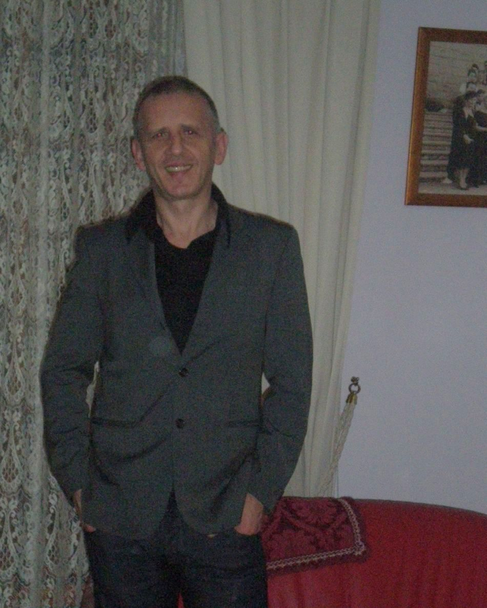

Chi sono
Geologo libero professionista, mi occupo di geologia applicata all'ingegneria civile e alla pianificazione territoriale.

Sono Massimo Pasquale Fedele, geologo libero professionista con sede operativa a Desenzano del Garda, e svolgo incarichi prevalentemente nella Lombardia orientale e nelle aree limitrofe del Veneto.
Nel corso della mia attività professionale ho maturato esperienza nella caratterizzazione geologica, geotecnica e geofisica del sottosuolo, operando a supporto di progettisti, imprese, tecnici e amministrazioni pubbliche. Mi occupo della definizione del modello geologico e geotecnico di sito, dell'esecuzione di indagini in situ e prospezioni geofisiche con strumentazione propria, nonché della redazione delle relazioni tecniche previste dalle Norme Tecniche per le Costruzioni e dalla normativa regionale vigente.
La mia attività comprende consulenze geologiche applicate all'ingegneria civile, con particolare attenzione alle indagini e all'esplorazione del sottosuolo, agli studi per fondazioni dirette e speciali, alla valutazione delle condizioni geotecniche dei terreni e alla gestione delle problematiche idrogeologiche connesse agli interventi edilizi e infrastrutturali.
Mi occupo inoltre di invarianza idraulica e idrologica, sistemi di dispersione e infiltrazione nel sottosuolo, recupero e sistemazione del territorio, indagini geofisiche, studi di compatibilità geologica e geotecnica, indagini geoarcheologiche e consulenze tecniche in ambito geologico, ambientale e forense.
Oggi, come libero professionista, metto a disposizione le competenze maturate nel corso degli anni per offrire servizi geologici completi, tecnicamente rigorosi e calibrati sulle specifiche caratteristiche del sito e dell'opera in progetto.
Ogni incarico viene affrontato partendo dall'analisi del contesto geologico locale e dalla scelta delle indagini più appropriate, con l'obiettivo di ottenere parametri rappresentativi delle reali condizioni del sottosuolo e di costruire un quadro interpretativo coerente sotto il profilo geologico, geotecnico e idrogeologico.
Il mio obiettivo professionale è fornire al progettista dati affidabili, verificabili e adeguatamente documentati, utili alle successive scelte progettuali, e predisporre per gli enti competenti elaborati tecnici completi e coerenti con il quadro normativo, riducendo quanto possibile la necessità di integrazioni o successive richieste di chiarimento.
Alla competenza tecnica affianco un approccio operativo diretto: dalla pianificazione delle indagini alla loro esecuzione, dall'interpretazione dei dati alla redazione finale della documentazione, seguendo personalmente le diverse fasi dell'incarico.
Percorso
- Laurea
- Laurea in Scienze Geologiche presso l'Università degli Studi «La Sapienza» di Roma — aprile 1991
- Abilitazione
- Esame di Stato per l'esercizio della professione di Geologo
- Iscrizione
- Ordine dei Geologi della Regione Lombardia — Sezione A, n. 1416, con qualifica di Geologo Specialista
- Formazione continua
- Aggiornamento professionale continuo (APC) secondo il regolamento dell'Ordine
Come lavoro
- Firma diretta
- Gli elaborati sono redatti e firmati direttamente dal geologo incaricato, nel rispetto del Codice Deontologico
- Dati verificabili
- Ogni risultato è tracciabile: dai dati grezzi di campagna al parametro adottato in relazione
- Integrazione
- Mi inserisco nel gruppo di progettazione fin dalle fasi preliminari, per orientare le scelte quando incidono di più
- Privacy
- Trattamento dei dati conforme al Regolamento (UE) 2016/679 — vedi informativa
Indagini eseguite con attrezzatura di proprietà
Disporre direttamente della strumentazione significa tempi più rapidi, pieno controllo sulla qualità dell'acquisizione e costi contenuti per il committente.
Sismica attiva
Sismografo a 24 bit effettivi con 24 geofoni verticali (frequenza propria 4,5 Hz) per indagini MASW 1D e 2D e tomografia a rifrazione sismica con energizzazione a massa battente.
Sismica passiva
Sismografo tridirezionale SR04 Geobox (Sara Electronic Instruments) con tre velocimetri ortogonali ad alta risoluzione (4,5 Hz) per misure di microtremore HVSR.
Prove in sito
Penetrometro dinamico, attrezzatura per prove di permeabilità a carico variabile e per l'esecuzione di pozzetti e trincee esplorative.
Elaborazione e controllo. I dati vengono elaborati con software tecnici dedicati e sottoposti a procedure di verifica indipendente sviluppate internamente, per validare curve di dispersione, inversioni, profili di velocità e parametri geotecnici prima della loro adozione in relazione.
Lavoriamo insieme al tuo progetto
Raccontami di cosa hai bisogno: ti rispondo con la proposta tecnica ed economica più adatta.